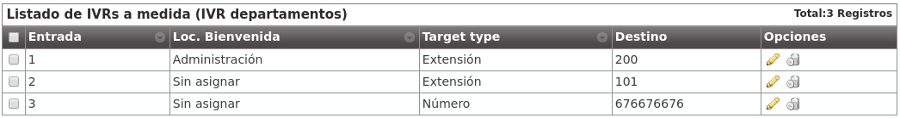

Interactive Voice Response (IVR)¶
IVRs are the most common way to make audio menus where the caller must choose the destination of the call by pressing codes based on the locutions instructions that will be played.
Generic IVRs¶
In this type of IVRs, the caller will directly press the extension that must previously know (or the welcome locution suggests) and the system will automatically connect with that extension:
Generic IVRs have the following fields:
- Name
- Descriptive name of the IVR that will be used in other sections.
- Timeout
- Time that caller has to enter the digits of the target extension.
- Welcome locution
- This locution will be played as soon as the caller enters the IVR.
- Success locution
- In case the dialed extension exists in the company, this locution will be played (usually something like ‘Connecting, please wait...’).
- No input process
- If the caller does not input any digit in the timeout value, the no input process will trigger, playing the configured locution and redirecting the call to another number, extension or voicemail.
- Error process
- If the dialed extension is invalid, the error process will trigger, playing the configured locution and redirecting the call to another number, extension or voicemail.
Custom IVRs¶
Contrary to the generic IVRs where the caller can only dial internal extensions, the custom IVRS can configure options that can be routed in different ways.
Hint
The most common usage for this IVR is combining them with a welcome locution that says something like ‘Press 1 to contact XXX, Press 2 to contact YYY, ...”
Most of the configurable fields are the same that generic IVR uses:
The process of each entry of the IVR can be defined in the following button:

In this example, the caller can dial 1, 2 or 3 (the rest will be considered as an error and will trigger the Error process):
- 1: Call to the internal extension 200, created in previous section that routes to hunt group Reception.
- 2: Call to the internal extension 101.
- 3: Route this call to the external number 676 676 676.
Note
Each of the Custom IVR entries supports a locution that, if set, will be played instead of the IVR success locution. This way, you can configure a generic locution (like ‘Connecting....’) or a custom one for a given entry (like ‘Connecting reception department, please wait...’).
Entries are regular expressions
Although on the most typical usage of this IVRs options will be digits from 1 to 9, entries are interpreted as regular expressions. This way, you could add an entry like “^2[0-9]{2}$” to group the behaviour of all numbers from 200 to 299. With this usage, Max digits parameter is important too.
Error
To avoid undesired behaviour, if you use options out of 0-9, use regular expression notation (‘^1$’ instead of ‘1’, ‘^10$’ instead of ‘10’ and so on).